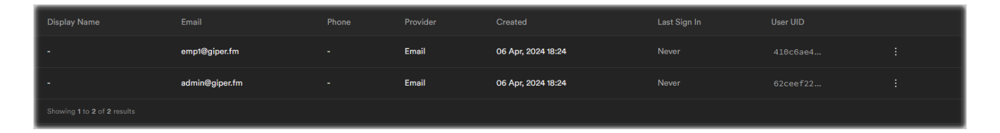
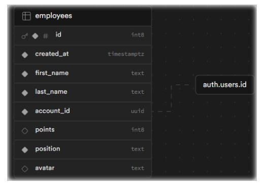
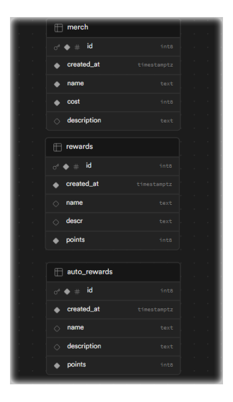
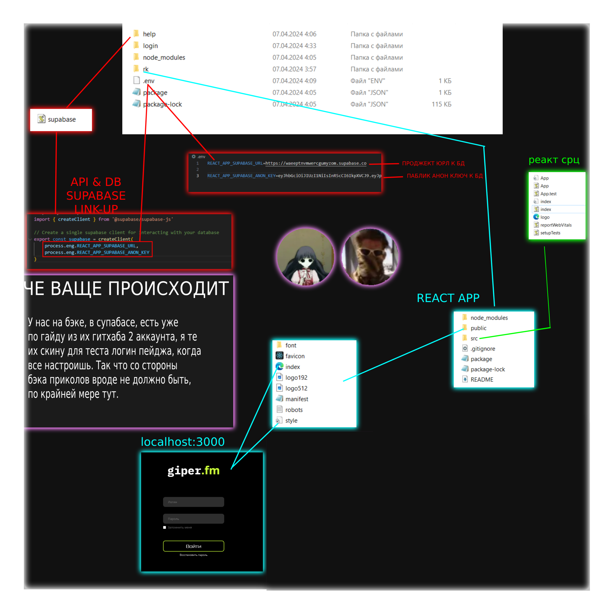
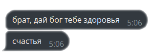

После регистрации на платформе SUPABASE, мы создали базу и передали anon pub ключ и URL ссылку на базу нашему фронту. В первую очередь мы, бэки, решили не придумывать велосипед и пойти по прямиком по гайду, а именно создали 2 тестовых юзера в Таблице Аккаунтов:  Далее была создана Таблица Сотрудников, связанная по Foreign ключу с таблиец AUTH.USERS:  Следующим шагом мы сделали тестовые базы для мерча, наград и авто-наград, в это время мы ждали логин-страницу от нашего фронта.  Через какое-то время, мы получили логин-сроницу от нашего фронта, но вот незадача с реактом у нас появились проблемы. Пока в разработке находился Дэшборд, мы так же занимались изучением REACT, пытаясь подогнать наше реакт-приложение под логин страницу, что любезно предоставил нам фронт:  К 7 утра понедельника, мы получили сурсы дэшборда, но в такое время, мы втроём поняли, что надо бы уже пойти поспать. Проснулись и узнали, что сдавать работу уже надо. Я залил сурс логин-страницы с дэшбордом на гитхаб и линканул это в конференцию команды. Вечером понедельника я принялся за документацию, время на изучения реакта у нас нет. Наша изначальная идея была - предоставить часть готовой базы и вместе с единственным фронтом заставить это всё работать, к сожалению, времени у нас на всё это не оказалось. 